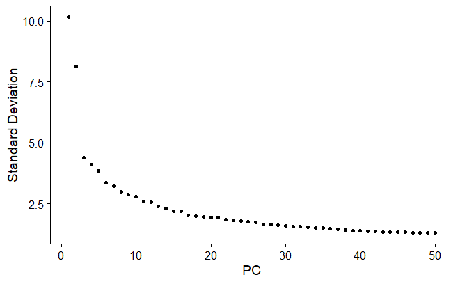
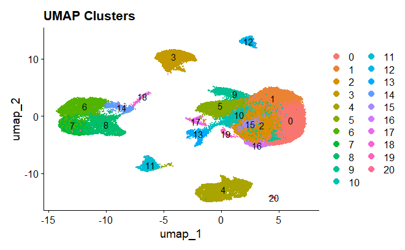
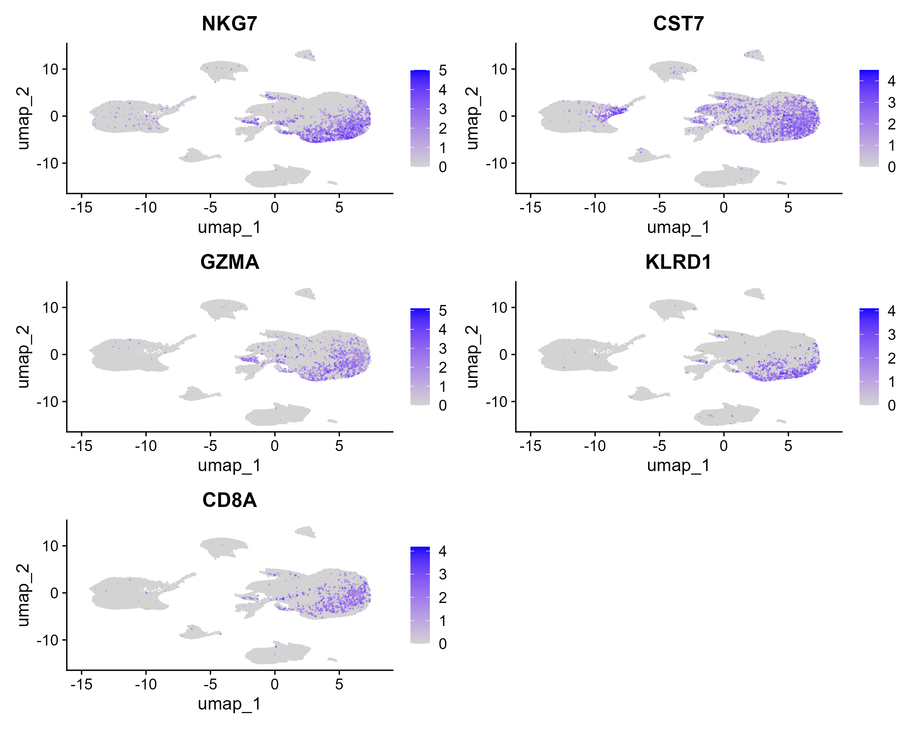
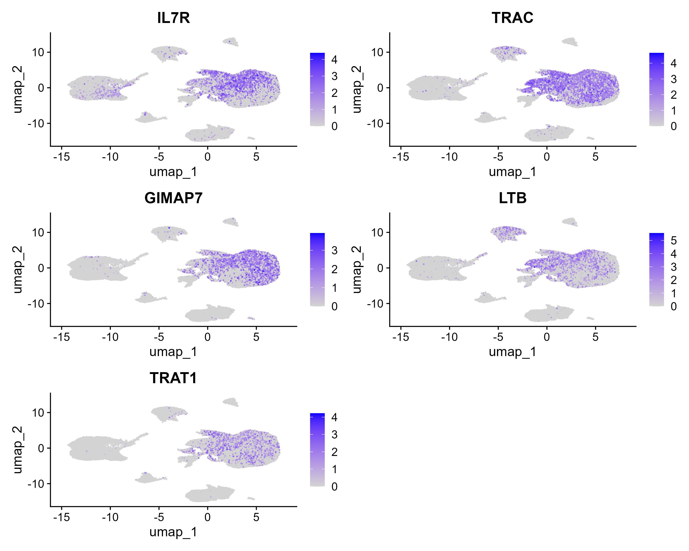
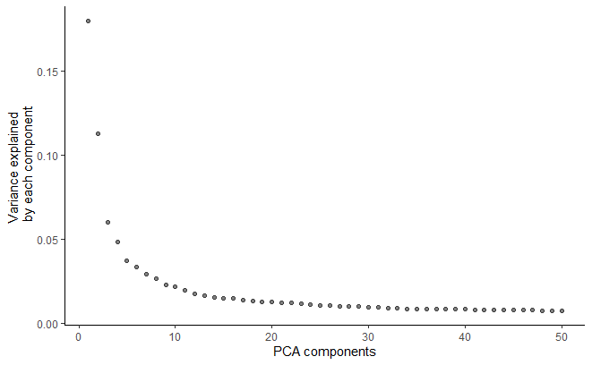
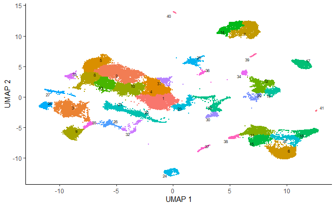
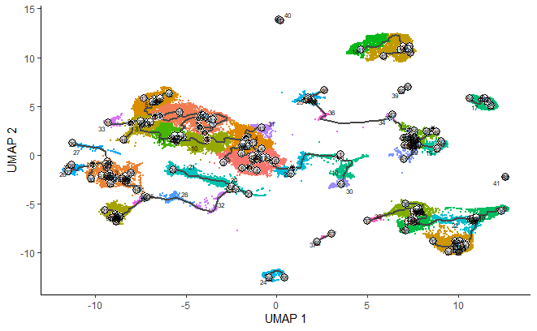
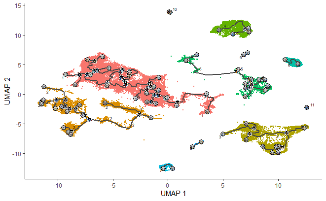

library(Seurat)
library(monocle3)
library(ggplot2)
library(plotly)
library(dplyr)
library(tidyverse)Single-Cell RNA Sequencing Analysis: Dimensionality Reduction, Clustering, and Trajectory Inference of myeloid-driven CD8+ T cell exhaustion post-chemotherapy
Thesis Statement for the Project
This project aims to investigates myeloid-driven CD8+ T cell exhaustion post-chemotherapy using single-cell RNA sequencing (scRNA-seq) and spatial transcriptomics. By leveraging dimensionality reduction, clustering, and trajectory inference, we want to uncover dynamic immune microenvironments and elucidate myeloid-T cell interactions shaping CD8+ T cell dysfunction. Our findings should highlight the spatiotemporal plasticity of immune cell states, providing insights into the mechanisms of T cell exhaustion and potential therapeutic targets in the post-chemotherapy setting.
Required Libraries
Data Pre-processing & Seurat Object
# Loading the scRNA-seq datasets
expression_matrix <- ReadMtx(mtx = "GSE266577_counts_raw.mtx.gz",
cells = "GSE266577_barcodes.txt.gz",
features = "GSE266577_seurat_features.txt.gz",
feature.column = 1
)# Creating the Seurat object
seurat_obj <- CreateSeuratObject(counts = expression_matrix, project = "scRNAseq")
# Add mitochondrial gene percentage
seurat_obj[["percent.mt"]] <- PercentageFeatureSet(seurat_obj, pattern = "^MT-")
# Filter low-quality cells
seurat_obj <- subset(seurat_obj, subset = nFeature_RNA > 200 & nFeature_RNA < 2500 & percent.mt < 5)
seurat_obj <- NormalizeData(seurat_obj) %>%
FindVariableFeatures(selection.method = "vst", nfeatures = 2000)
# Scale data (normalizes the gene expression data for PCA)
seurat_obj <- ScaleData(seurat_obj)features_plot <- VlnPlot(seurat_obj,
features = c("nFeature_RNA",
"nCount_RNA",
"percent.mt"))
#features_plot
Quality control metrics of the UMI count matrix. The violin plot was generated using the filtered dataset on the cells with feature counts of > 2,500 and >200 and have a <5% of mitochondrial counts. nFeatures_RNA represents the number of genes per cell. nCount_RNA represents the number of molecular counts with genes per cell. At last, percent.mt represents the percent of reads that map to the mitochondrial genome.
# Perform PCA to reduce dimensions
seurat_obj <- RunPCA(seurat_obj)# Visualize the variance explained by PCA to decide the number of dimensions
ElbowPlot(seurat_obj, ndims = 50)
Elbow plot displays the percentage variance of PCs. After a PC of approximately 16, the PCs counts stabilize. However, a fall is noticed in the relationship between standard deviation and PCs. This indicates that around PC 16 or 17, it could be used as a PC cut-off mark.
# Perform UMAP using optimal PCA dimensions (e.g., dims 1:15 based on ElbowPlot)
seurat_obj <- RunUMAP(seurat_obj, dims = 1:20)
# Perform clustering to group cells
seurat_obj <- FindNeighbors(seurat_obj, dims = 1:20)
seurat_obj <- FindClusters(seurat_obj, resolution = 0.5) #Adjust res 4 granularity# Plot UMAP colored by clusters
DimPlot(seurat_obj, reduction = "umap", label = TRUE) + ggtitle("UMAP Clusters")
UMAP for cluster cells. The colors represent specific cell types within the cluster map by their number. Cell type annotation will follow.
Cell Type Annotation
cluster_markers <- FindAllMarkers(seurat_obj,
only.pos = TRUE,
min.pct = 0.25,
logfc.threshold = 0.25)Here in this table we can visualize all the marker genes with their expression by the average log, as well as the percent expression on the cluster and their cluster group.
cluster_markersHere below, we are going to isolate the top 10 cluster markers in order to refine and find our best cell types annotation later on.
top10 <- cluster_markers %>% group_by(cluster) %>% top_n(n = 10, wt = avg_log2FC)
top10# Extract gene names for the heatmap
top_genes <- top10$gene
# Check which genes are missing
missing_genes <- top_genes[!top_genes %in% rownames(GetAssayData(seurat_obj, slot = "scale.data"))]
#print(missing_genes)
# Filter top_genes to include only those present in the scale.data matrix
valid_genes <- top_genes[top_genes %in% rownames(GetAssayData(seurat_obj, slot = "scale.data"))]
#print(valid_genes)heatmap <- DoHeatmap(
seurat_obj,
features = valid_genes,
group.bar = TRUE,
angle = 70,
size = 3
) + theme(
legend.position = "top", # Adjusts the legend position
legend.key.height = unit(0.5, "cm") # Adjust group bar height
)
The heatmap is representing the expression of the top-validated marker genes in every cluster. Each row shows the expression level of one marker gene, and the columns are grouped by their respective cluster. The yellow color indicates a higher expression level, while the purple shows a decrease in expression.
# top 5 genes per each cluster,
# based on (top_pct_genes$pct.1 - top_pct_genes$pct.2)
tugc0 = FeaturePlot(seurat_obj, features = c("NKG7", "CST7", "GZMA", "KLRD1", "CD8A"))
tugc1 = FeaturePlot(seurat_obj, features = c("IL7R", "TRAC", "GIMAP7", "LTB", "TRAT1"))
tugc2 = FeaturePlot(seurat_obj, features = c("TUBA4A", "DUSP4", "RUNX3", "ZFP36L2", "CXCR3"))
tugc3 = FeaturePlot(seurat_obj, features = c("CD79A", "MS4A1", "TNFRSF13C", "LINC00926", "BANK1"))
tugc4 = FeaturePlot(seurat_obj, features = c("DCN", "LUM", "COL1A1", "PRRX1", "SFRP2"))
tugc5 = FeaturePlot(seurat_obj, features = c("BATF", "AC133644.2", "TIGIT", "MAGEH1", "AC017002.1"))
tugc6 = FeaturePlot(seurat_obj, features = c("AIF1", "C1QA", "MS4A6A", "TREM2", "SDS"))
tugc7 = FeaturePlot(seurat_obj, features = c("MMP9", "RSAD2", "GM2A", "SERPINB2", "CCL3"))
tugc8 = FeaturePlot(seurat_obj, features = c("THBS1", "SEMA6B", "HCK", "TLR2", "CXCL5"))
tugc9 = FeaturePlot(seurat_obj, features = c("HSPA1A", "DNAJB1", "HSPH1", "HSPE1", "HSPA1B"))
tugc10 = FeaturePlot(seurat_obj, features = c("WFDC2", "SLPI", "KRT18", "KRT8", "CD24"))
tugc11 = FeaturePlot(seurat_obj, features = c("IGHG3", "IGHG1", "IGHGP", "IGHG4", "IGHG2"))
tugc12 = FeaturePlot(seurat_obj, features = c("TPSB2", "TPSAB1", "CPA3", "GATA2", "HPGDS"))
tugc13 = FeaturePlot(seurat_obj, features = c("EPCAM", "CD24", "CLDN3", "ELF3", "KRT17"))
tugc14 = FeaturePlot(seurat_obj, features = c("WFDC21P", "RAMP1", "CCL22", "FSCN1", "LGALS2"))
tugc15 = FeaturePlot(seurat_obj, features = c("TNFRSF18", "XCL1", "AREG", "HOTAIRM1", "IL4I1"))
tugc16 = FeaturePlot(seurat_obj, features = c("XCL2", "XCL1", "GNLY", "AREG", "KRT86"))
tugc17 = FeaturePlot(seurat_obj, features = c("MKI67", "BIRC5", "ASPM", "CKAP2L", "AURKB"))
tugc18 = FeaturePlot(seurat_obj, features = c("GZMB", "C12orf45", "PTCRA", "PLD4", "MAP1A"))
tugc19 = FeaturePlot(seurat_obj, features = c("IL32", "IL2RG", "CD3G", "RNF213", "SLFN5"))
tugc20 = FeaturePlot(seurat_obj, features = c("PCAT19", "ECSCR.1", "ADGRL4", "PLVAP", "SELE"))Here we show the top 5 genes per cluster group, based on (top_pct_genes $pct.1 - top_pct_genes$pct.2). Here we are only showing cluster 0 followed by cluster 1. The rest of the cluster plots (2-20) can be found in the plots folder as a supplemental material.
By producing features plot for the cluster groups, we can asses and determine that the correct expressed genes have been mapped correctly to their cluster group number. This will guide us in cell type annotation.

This plot above, represent cluster group 0, and it’s showing the top 5 genes that are expressed within the cluster. The purple color represents the expression level of that gene.

This plot above, represent cluster group 1, and it’s showing the top 5 genes that are expressed within the cluster. The purple color represents the expression level of that gene.
#Cell type mapping to the cluster groups
# here we map the cell type to the top expressed gene group of each cluster
celltype_mapping <- c(
"0" = "Cytotoxic T cells/(NK) cells",
"1" = "T cells",
"2" = "Cytotoxic CD8+ T cells",
"3" = "B cells",
"4" = "Fibroblasts",
"5" = "Unknown",
"6" = "Macrophages",
"7" = "ovaries/placenta",
"8" = "Monocytes/Macrophages",
"9" = "Ubiquitously ",
"10" = "B cells/Neurons",
"11" = "B cells/Plasma cells",
"12" = "Mast cells",
"13" = "B cells/Neurons",
"14" = "Dendritic cells",
"15" = "Act. T cells",
"16" = "Hair f. cells",
"17" = "Proliferating cells",
"18" = "Cytotoxic T cells/(NK) cells",
"19" = "Act. T cells/NK cells/Epithelial cells",
"20" = "Endothelial cells"
)
# Ensure seurat_clusters is stored as a character vector
seurat_obj$seurat_clusters <- as.character(Idents(seurat_obj)) # Use Idents() to reference clusters
# Assign cell type labels based on the cluster ID
seurat_obj$cell_type <- factor(unname(celltype_mapping[seurat_obj$seurat_clusters]))
# Verify the assignment
table(seurat_obj$cell_type)This list was made manually by downloading the “top10_cluster_markers” as a csv file, and with the help of ClaudAi and ChatGPT, I was able to cross check and reference the cell types of each gene as a new file “Top10_gene_markers_and_their_cell_types .csv”
After that, appended the cell type column to the top10_cluster_markers file as a new file "top10_Matched_Gene_Markers_with_Cell_Types.csv"
Following that, mapped the cell type to the top expressed gene group of each cluster to the new list as you see above "celltype_mapping".
cell_type_umap_plot <- DimPlot(seurat_obj,
group.by = "cell_type",
label = TRUE,
repel = TRUE) +
theme(
text = element_text(size = 30), # Adjust overall text size
legend.text = element_text(size = 20), # Adjust legend text size
legend.title = element_text(size = 20) # Adjust legend title size
) +
guides(color = guide_legend(override.aes = list(size = 15)))
#cell_type_umap_plot
Cell type annotated UMAP. The colors represent specific cell types within the cluster map. Some of the cluster groups share similar cell types as we can see from the legend.
heatmap_celltype <- DoHeatmap(
seurat_obj,
group.by = "cell_type", # Ensure "cell_type" is correctly assigned in metadata
group.bar = TRUE,
angle = 70,
size = 3
) + theme(
legend.position = "top", # Moves legend to the top
legend.key.height = unit(0.5, "cm") # Adjusts group bar height
)
# Display the heatmap
#print(heatmap_celltype)Due to memory limit of my personal PC, I was not able to render a heat map grouped by their cell type.
Trajectory Inference
# DATA Preprocessing - Convert Seurat to Monocle
# <- as.cell_data_set(seurat_obj) did not work
# Extract expression matrix
expression_matrix <- GetAssayData(seurat_obj, slot = "counts")
# Extract cell metadata
cell_metadata <- seurat_obj@meta.data
# Create gene metadata
gene_metadata <- data.frame(
gene_short_name = rownames(expression_matrix),
row.names = rownames(expression_matrix)
)
# Create cell_data_set
cds <- new_cell_data_set(
expression_data = expression_matrix,
cell_metadata = cell_metadata,
gene_metadata = gene_metadata
)# Normilize data
cds <- preprocess_cds(cds, num_dim = 50) Here we use 50 as the number of dimensions to easily identify the elbows in the PC plot.
plot_pc_variance_explained(cds)
Elbow plot displays the percentage variance of PCs. After a PC of approximately 16, the PCs counts stabilize. However, a fall is noticed in the relationship between standard deviation and PCs. This indicates that around PC 16 or 17, it could be used as a PC cut-off mark.
Due to system memory limitations and time constraints, I was unable to complete the remaining tasks within the expected deadline and quality standards. I explored various methods to address the memory issues and optimize file sizes for improved plot rendering; however, despite my efforts, I was not successful in resolving these challenges within the given timeframe. As a result, I was unable to continue drawing observations and conducting further analysis for the remainder of the project.
The plots that are shown below were still on the exploratory stage and they are not the final plots needed for the report.
I will revisit this case study for completion once memory upgrades have been made.
# Dimensionality Reduction
cds <- reduce_dimension(cds, reduction_method = "UMAP", preprocess_method = "PCA")
#plot_cells(cds, color_cells_by = "cell_type")
#plot_cells(cds)# Clustering and annotation
cds <- cluster_cells(cds)
plot_cells(cds, color_cells_by = "cluster")
#plot_cells(cds, color_cells_by = "cell_type")
# Trajectory Inference / trajectory graph
cds <- learn_graph(cds, use_partition = FALSE)
plot_cells(cds,
color_cells_by = "cluster",
label_groups_by_cluster=FALSE,
label_leaves=FALSE,
label_branch_points=FALSE)
plot_cells(cds,color_cells_by = "partition")
# Order cells in pseudotime
cds <- order_cells(cds)
plot_cells(cds, color_cells_by = "pseudotime")plot_cells(cds,
color_cells_by = "pseudotime",
label_cell_groups=FALSE,
label_leaves=TRUE,
label_branch_points=TRUE,
graph_label_size=1.5)